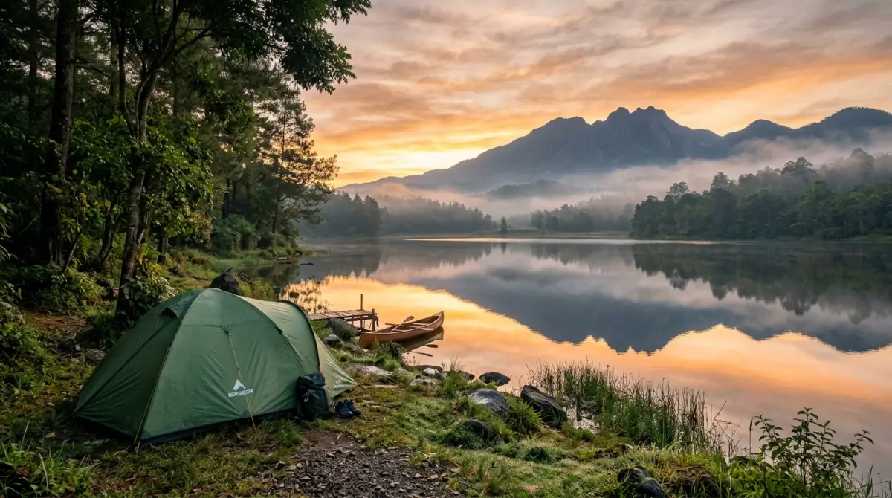
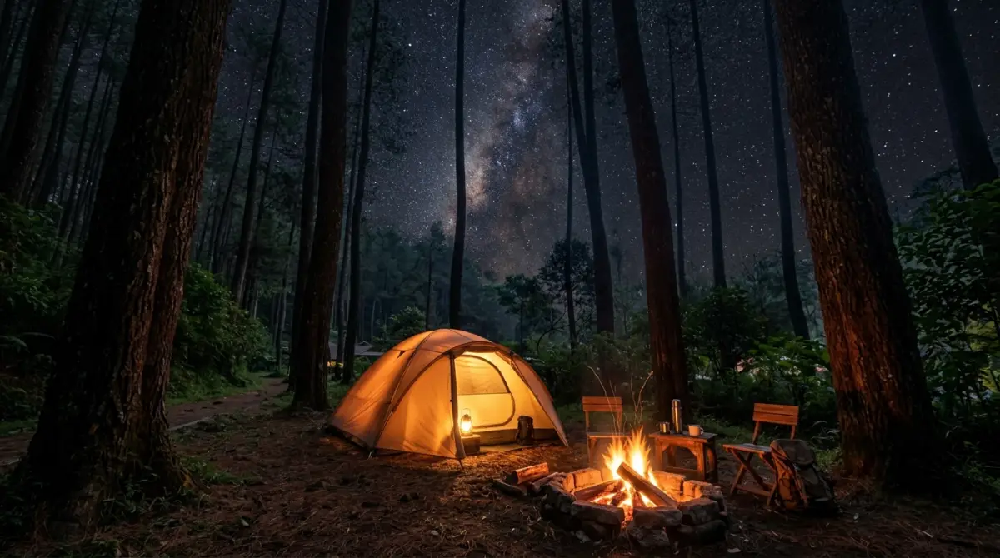

Solo Raya dikelilingi pegunungan megah yang menjadi surga tersembunyi bagi para pencari ketenangan dari hiruk pikuk kota.Coba ingat-ingat lagi, kapan terakhir kali kamu benar-benar mengambil napas panjang tanpa beban? Hari-harimu mungkin dihabiskan melompat dari satu tenggat waktu ke tenggat waktu lainnya, menatap layar laptop hingga mata perih, dan membiarkan akhir pekan menguap begitu saja di atas kasur dengan perasaan cemas menyambut hari Senin. Kita sering membohongi diri sendiri dengan berkata, "Bulan depan deh aku cuti," padahal kenyataannya, pekerjaan tidak akan pernah ada habisnya.
Menunda istirahat sama saja dengan mencuri kebahagiaan dari masa mudamu sendiri. Jangan sampai kamu baru menyadari pentingnya menepi sejenak ketika tubuhmu sudah protes atau semangatmu sudah sepenuhnya padam ditekan rutinitas. Bayangkan betapa leganya menukar bisingnya lalu lintas dengan simfoni jangkrik, dan dinginnya AC ruang meeting dengan sejuknya kabut pegunungan.
Luangkan satu akhir pekan ini saja. Mengunjungi tempat camping di solo dan sekitarnya bukanlah kemewahan, melainkan jeda yang krusial agar kamu tidak menyesal telah melewatkan momen-momen terbaik dalam hidupmu hanya demi deretan angka di laporan bulanan.
Mengapa Lereng Pegunungan Solo Raya Adalah Jeda yang Kamu Butuhkan?
Bagi kamu yang sehari-hari bertarung dengan Key Performance Indicator (KPI) dan lalu lintas kota yang padat, mencari ketenangan adalah sebuah kebutuhan primer, bukan lagi sekadar tren gaya hidup. Secara geografis, wilayah Solo Raya sangat diuntungkan karena dikelilingi oleh lanskap pegunungan yang megah, terutama Gunung Lawu di timur dan Gunung Merbabu di barat.
Secara administratif, sebagian besar spot alam ini memang berada di Kabupaten Karanganyar atau Boyolali, namun para pelancong lebih familiar menyebutnya sebagai destinasi tempat camping di solo. Berada di ketinggian rata-rata di atas 1.000 meter dari permukaan laut (mdpl), kawasan ini menawarkan iklim mikro yang ideal.
Suhu udara yang sejuk—berkisar antara 16 hingga 22 derajat Celcius—telah terbukti secara empiris mampu menurunkan tekanan darah dan meredakan ketegangan saraf setelah berhari-hari menatap layar monitor. Selain itu, akses menuju lokasi-lokasi ini sudah sangat berkembang. Kamu tidak perlu membuka jalur layaknya penjelajah hutan; jalan aspal mulus siap mengantarkan kendaraanmu langsung ke area perkemahan yang dikelola secara profesional.
7 Rekomendasi Tempat Camping di Solo Raya untuk Healing Maksimal
Untuk memudahkanmu memilih, berikut adalah hasil kurasi lokasi kemah yang mengutamakan pemandangan alam memukau, kebersihan, dan keamanan. Sangat cocok bagi kamu yang ingin healing tanpa harus repot.
1. Telaga Madirda, Karanganyar: Ketenangan di Tepi Air yang Menenangkan
Jika kamu mencari suasana yang damai dengan elemen air, Telaga Madirda di kaki Gunung Lawu adalah opsi teratas. Terletak di Desa Berjo, telaga alami ini dikelilingi oleh pepohonan rindang dan bukit hijau. Menggelar tenda tepat di pinggir telaga memberikan sensasi tersendiri.
Di pagi hari, pantulan sinar matahari di permukaan air yang tenang berpadu dengan kabut tipis menciptakan efek visual yang luar biasa. Fasilitasnya sangat dikelola dengan baik oleh desa setempat, mulai dari toilet bersih, mushola, hingga warung makan. Cocok untuk lari sejenak dari rentetan notifikasi email dari atasanmu.
2. Bukit Mongkrang: Sabana Hijau untuk Pendaki Pemula
Tidak semua dari kita punya fisik sekuat atlet, dan itu wajar. Bukit Mongkrang adalah jawaban bagi kamu yang ingin merasakan sensasi mendaki dan berkemah di atas gunung tanpa harus menyiksa otot betis. Waktu tempuh dari titik awal pendakian di Tlogo Dringo ke area camp pertama (Bukit Candi) hanya sekitar satu jam berjalan santai.
Sesampainya di atas, kamu akan disambut oleh hamparan padang sabana luas yang menguning di musim kemarau dan menghijau di musim hujan. Pemandangan Gunung Lawu yang berdiri gagah di depan mata saat matahari terbit akan membuat segala lelahmu menguap tak bersisa.
3. Bumi Perkemahan Segoro Gunung, Kemuning: Teduhnya Hamparan Kebun Teh
Kawasan Kemuning sudah lama dikenal sebagai surga teh di Solo Raya. Di Bumi Perkemahan Segoro Gunung, kamu bisa memadukan pengalaman berkemah dengan terapi visual berupa hamparan kebun teh yang hijau sejauh mata memandang. Lokasinya sangat ramah untuk kendaraan roda dua maupun roda empat.
Pagi hari di sini adalah yang terbaik; cobalah berjalan di sela-sela perdu teh saat embun masih menempel, hirup udaranya dalam-dalam. Sensasinya jauh lebih menyegarkan daripada secangkir kopi mahal yang biasa kamu beli di kafe sebelah kantor.

Lereng pegunungan di Solo Raya menawarkan lanskap alam yang sempurna untuk melepas penat dari rutinitas sehari-hari.4. Sakura Hills Tawangmangu: Nuansa Jepang di Ketinggian Lawu
Bagi kamu yang mencari tempat kemah dengan fasilitas modern dan instagramable, Sakura Hills wajib masuk daftar. Menggabungkan konsep alam Gunung Lawu dengan arsitektur khas Jepang, tempat ini menawarkan area perkemahan yang sangat terpadu. Kamu bisa membawa tenda sendiri atau menyewa glamping yang sudah disediakan.
Fasilitas di sini setara dengan hotel berbintang di alam terbuka, menjadikannya pilihan sempurna jika kamu membawa keluarga atau rekan kerja yang belum terbiasa tidur di alam liar namun tetap ingin menikmati pemandangan supercamp yang spektakuler.
5. Bukit Sekipan, Tawangmangu: Serba Ada, Anti Ribet
Terkadang, merencanakan logistik camping terasa lebih rumit daripada menyusun presentasi untuk klien. Jika kamu ingin yang praktis, Bukit Sekipan adalah destinasinya. Berada di area hutan pinus yang sangat rindang, area ini menawarkan paket kemah yang sangat lengkap.
Tenda, matras, api unggun, hingga konsumsi bisa disediakan oleh pihak pengelola. Udara khas Tawangmangu yang menggigit di malam hari akan dihangatkan oleh fasilitas yang memadai. Pohon-pohon pinus yang menjulang tinggi memberikan perlindungan ekstra dari angin, membuat tidur malammu jauh lebih nyenyak.
6. Embung Manajar, Boyolali: Lanskap Merbabu dari Kaca Raksasa
Beralih sedikit ke arah barat menuju lereng Merbabu, Embung Manajar di Selo, Boyolali menawarkan pesona yang tak kalah magis. Fungsi utama embung ini adalah penampungan air, namun lokasinya yang berada di punggung bukit menjadikannya titik pandang (viewpoint) yang menakjubkan. Kamu bisa mendirikan tenda di area sekitar embung.
Saat pagi tiba, Gunung Merapi akan terlihat sangat jelas dan gagah. Pantulan gunung pada permukaan air embung layaknya cermin alam raksasa yang menyajikan keindahan tanpa filter. Akses naiknya memang cukup menantang dan menanjak, tapi sangat sepadan dengan pemandangan yang ditawarkan.
7. Bumi Perkemahan Pleseran, Nglurah: Asrinya Hutan dan Gemericik Sungai
Terletak di Nglurah, Tawangmangu (yang juga dijuluki desa wisata tanaman hias), Pleseran menawarkan pengalaman kembali ke alam yang sesungguhnya. Kawasan ini berupa hutan homogen yang dikelola Perhutani dengan aliran sungai kecil berbatu yang jernih membelah area camping. Suara air mengalir ini bekerja bagaikan terapi white noise alami yang jauh lebih efektif mengatasi insomniamu dibanding mendengarkan podcast sebelum tidur. Tempatnya cukup luas, teduh, dan memiliki harga tiket masuk yang sangat terjangkau bagi para pencari ketenangan paripurna.
"Pada akhirnya, kenangan menghangatkan diri di depan api unggun jauh lebih berharga untuk dikenang daripada tumpukan berkas yang telah kamu selesaikan."
— Perspektif Pejalan SejatiPersiapan Esensial untuk Menghalau Dinginnya Malam
Berada di alam terbuka berarti menyerahkan dirimu pada aturan alam. Persiapan yang matang adalah kunci agar momen healing tidak berujung masuk angin. Pertama, lupakan pakaian berbahan jeans atau katun tebal yang sulit kering. Gunakan sistem layering atau pakaian berlapis: lapisan dalam yang menyerap keringat, lapisan tengah (seperti fleece) untuk menahan suhu tubuh, dan lapisan luar (windbreaker) untuk menahan angin malam lereng gunung.
Kedua, bawalah persediaan makanan yang praktis namun padat kalori. Membuat mie instan memang klasik, namun menyeduh minuman jahe hangat atau cokelat panas sambil memandangi bintang jauh lebih efektif menghangatkan badan dan memperbaiki mood. Terakhir, pastikan kamu selalu membawa kantong sampah sendiri. Meninggalkan lokasi dalam keadaan bersih adalah etika dasar tak tertulis yang mencerminkan kedewasaan kita sebagai penikmat alam.
Waktunya Mengambil Jeda Sebelum Terlambat
Pernahkah kamu berhitung, sisa berapa akhir pekan lagi yang kamu miliki di usia produktif ini sebelum energi mulai menurun? Kita terlalu sering menukar waktu luang dengan ambisi karir, berpikir bahwa nanti akan ada waktu yang tepat untuk beristirahat. Sayangnya, waktu tidak pernah bernegosiasi. Ia terus berlalu, mengikis semangat dan tenaga jika tidak diisi ulang dengan hal-hal yang menghidupkan jiwa.
Memutuskan untuk pergi ke tempat camping di solo bukan sekadar jalan-jalan biasa. Ini adalah momen untuk memutus koneksi sejenak dari internet, agar kamu bisa terhubung kembali dengan dirimu sendiri.
Merasakan embun pagi, menghirup aroma tanah yang basah, dan melihat matahari terbit dari ketinggian akan mengingatkanmu bahwa dunia ini terlalu luas dan indah untuk hanya disaksikan dari balik meja kerjamu.
Berhenti menunda. Berikan hadiah berupa ketenangan bagi pikiran dan tubuhmu akhir pekan ini. Karena pada akhirnya, kenangan menghangatkan diri di depan api unggun jauh lebih berharga untuk dikenang daripada tumpukan berkas yang telah kamu selesaikan.
FAQ — Tempat Camping di Solo